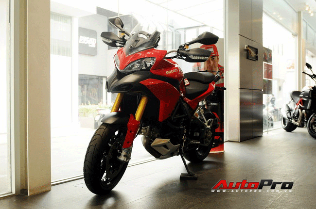
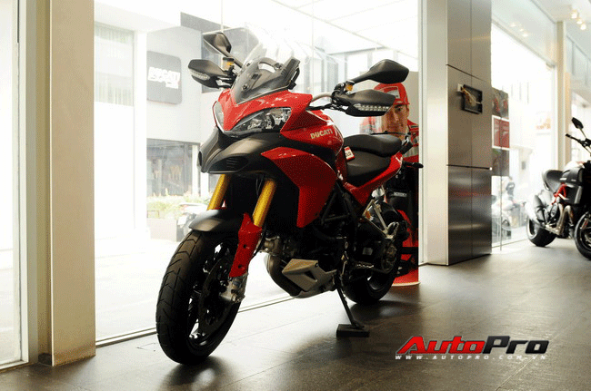

Cận cảnh "quái xế" Ducati Multistrada 1200S Touring

AUTOPRO - Có mức giá bán dưới 20.000 USD tại thị trường nước ngoài, Ducati Multistrda được coi là đối thủ nặng ký với mẫu xe BMW GS.
Multistrada là một dòng xe máy được giới thiệu bởi hãng xe nổi tiếng của nước Ý - Ducati vào năm 2003. Theo đại diện hãng, cái tên Multistrada theo phiên âm tiếng Ý có ý nghía là "nhiều tuyến đường". Ducati đã tạo ra một dòng sản phẩm dành riêng cho những người đam mê du lịch với một hình dáng khá đặc biệt. Phiên bản Ducati Multistrda gần đây nhất được trình làng tại triển lãm ECIMA tại Milan vào năm 2009.
Các kỹ sư thiết kế của Ducati đã phát triển và vẽ nên một mẫu xe mang hình dáng truyền thống của dòng xe địa hình enduro, nhưng khi nhìn kỹ phần đầu xe bạn lại nhanh chóng nghĩ ngay đến những đường nét hầm hố thường xuất hiện trên những mẫu xe thể thao. Nếu nhìn từ phía sau, Multistrada lúc này hiện nguyên hình là một mẫu xe đường trường khi được trang bị phụ kiện hai cốp sau. Như vậy có thể nói Multistrada như một đứa con lai và là sự giao thoa kết hợp của nhiều dòng xe tiện ích cùng một lúc mà hiếm có mẫu xe nào có được.

Tại phiên bản cao cấp nhất, Ducati cũng không ngớt tay trang bị cho đứa con lai của mình những phụ kiện đồ chơi đắt tiền đến từ những nhà sản xuất danh tiếng. Đơn cử như hệ thống phanh trước với đĩa phanh kép và cùm phanh bằng piston thủy lực đến từ nhãn hiệu Brembo gắn liền hệ thống chống bó cứng ABS sẽ giúp người tránh được hiện tượng xe bị khóa bánh khi phanh gấp một cách tối đa. Tiếp đó là hệ thống giảm xóc trước có hành trình ngược (Up side down) được cung cấp bởi tên tuổi Ohlins và giảm sóc dạng đơn (Monoshock), cả hai hệ thống giảm sóc này đều được điều chỉnh bằng điện tử tùy thuộc vào mặt đường người lái di chuyển. Hệ thống kiểm soát bám đường DTC (Ducati Traction Control) cũng không thể không góp mặt trên mẫu xe đắt tiền này.
Ducati Multistrada 1200 S/T được trang bị động cơ L-Twin 4 van trên mỗi xi-lanh có dung tích 1.198cc làm mát bằng dung dịch. Khối động cơ sản sinh ra công suất cực đại 150 mã lực tại vòng tua máy 9.250 vòng/phút và momen xoắn tối đa 118,7 Nm bắt đầu từ vòng tua 7.500 vòng/phút, kết hợp với hộp số tay 6 cấp sử dụng ly hợp ướt.
 
